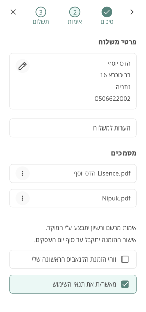

Overview
Pharm Yarok sells medicinal cannabis mostly through phone and WhatsApp.
Their app is outdated and inefficient.
The target audience is Cannabis patients aged 20-45.
Their app is outdated and inefficient.
The target audience is Cannabis patients aged 20-45.
The challenge
Redesign the app to improve usability, make ordering easier and
convenient for future purchases,
to encourage users to purchase on the app.
to encourage users to purchase on the app.
Research
I began the project by benchmarking similar apps to understand the
features that users expect and identify areas for improvement.
I then conducted user interviews to understand how people pick their strains.
I then conducted user interviews to understand how people pick their strains.
question
What helps decide which cannabis strain to buy?
Knowing which cannabis strain is right for a specific
condition, and following the majority's choice. question What difficulties have you experienced trying to buy cannabis? “It's hard to make a decision”
The pharmacy doesn't provide enough info on flavours, effects,
images, or reviews, making it impossible to make an informed
decision. You're left guessing what to get.
Insight
condition, and following the majority's choice. question What difficulties have you experienced trying to buy cannabis? “It's hard to make a decision”
The pharmacy doesn't provide enough info on flavours, effects,
images, or reviews, making it impossible to make an informed
decision. You're left guessing what to get.
Some search by popularity, others by THC/CBD levels, while others look for specific brands or price points.
Problem
Limited search: The only supported
way of searching is by brand.
Problem
Missing cart: Unclear what's added
after the products page.
Problem
Missing sign up: Users have to
reupload their cannabis license.
Problem
Lack of images: Patients want to see
what they're buying.
The solution
The revamped app simplifies medicinal cannabis ordering by providing
patients with insightful treatment decisions
and facilitating quick, effortless ordering.
and facilitating quick, effortless ordering.
Wireframes
The search page
To help users find the strains they're looking for easily, I categorized
the products according to the most common factors that
patients consider when choosing a strain: dose, newness, brand, popularity, and discounted price.
 Old
Old
Final design
Adding products to the cart
The problems I addressed were:
Missing cart: Unclear what's
added after the products page.
Lack of images: Patients want to
see what they're buying.
The solutions:
Adding a cart: to provide clarity
& allow users to leave
the process and return later without interruption.
Making POP products more accessible: I added a POP products section to the cart with
images and descriptions to boost sales.
the process and return later without interruption.
Making POP products more accessible: I added a POP products section to the cart with
images and descriptions to boost sales.

Checkout process


Order tracking
The problems I addressed were:
Lack of delivery info leading to cancellations:Patients would have to contact the pharmacy to get
delivery details, or await contact. most people would
get tired waiting and purchase someplace else.
delivery details, or await contact. most people would
get tired waiting and purchase someplace else.
The solutions:
Providing clear feedback & setting expectations:
After placing an order, the success page helps inform
the patient about the timeline of the order. Allocating space for order tracking:After placing an order, the info, status and ETA will be
visible at the top of the search page.
the patient about the timeline of the order. Allocating space for order tracking:After placing an order, the info, status and ETA will be
visible at the top of the search page.